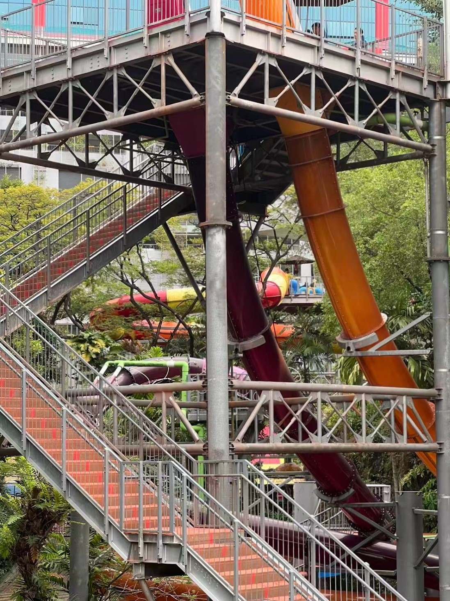
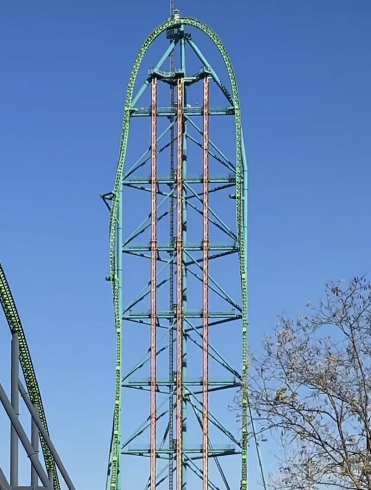
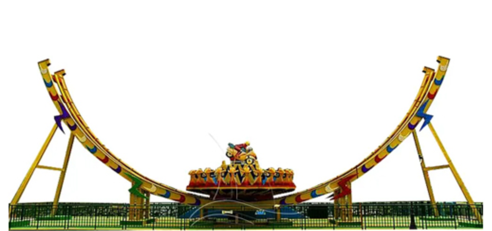

Select a function family below to jump to its section:
Guo Haoying, Feng Jinhan
Period 3
Did you know that many everyday moments can be described by mathematical functions? From computer science to economics, and from architectural engineering to biology, functions translate abstract theory into workable solutions. Here, we explore the functions in amusement parks with you.
Our first stop is the familiar Sunway Lagoon—voted among Asia’s Best Attractions, an award-winning park with 90+ rides. Let’s see how transformations turn real rides into precise models!

The first function is the Reciprocal Function. It is inspired by one of the most thrilling rides at Sunway Lagoon—the pirate ship. While it may not look challenging, it can actually rotate 360° !
\( f(x) = \frac{1}{x} \)
Below is an image of the ideal ride that best matches the parent function, which helps visualize why we chose this ride.
When we observe the ship near the bottom of its swing, the curved shape evokes the way that reciprocal functions’ graph bends as they approach asymptotes.
However, due to camera perspective and other factors, a single function cannot fully fit the ride. Our first attempt uses
\(h(x) = -3.9\left(\frac{1}{1.8(x-8)}\right) - 2.3,\quad 7.1 \le x \le 7.65\)
and we apply the following transformations to match the ride:
First, to make the function show a growing trend, we applied a reflection, which could be done over either the x or y axis. In our case, we chose the x axis. However, as x approaches 0, the function begins to change rapidly because x is in the denominator. So, we decided to apply a vertical stretch. We found that it best fits the bottom of the pirate ship when the value of a is between 40 and 50.If the value is above 50, the image is too steep; if it is below 40, it is too flat. ultimately settling on 45.8. Finally, we adjusted the asymptote to the pirate ship's position, by adding a horizontal translation of 10.9 units to the right and a vertical transition of 12 units downwards.
To capture the remaining portion, we add the second function:
\(g(x) = -45.8\left(\frac{1}{x-10.9}\right) - 12,\quad 0.5 \le x \le 7.1\)
Similar to the first function, this one also needs to be reflected first. Since the remaining part of the pirate ship is quite steep, no significant changes will be needed. We began with a vertical stretch by a factor of 4, and then aligned the curve with the pirate ship by applying horizontal translation of 8 units to the right and vertical translation 2.3 units downwards. At this point, the top of the curve is positioned very close to the top of the pirate ship, so we applied a horizontal compression by a factor of 1.8 (When the horizontal scale factor k is close to 2, the function best matches the shape of the ride. If k is greater than 2, the graph becomes too steep, and if k is less than 2, the graph becomes too flat, after trying different, we found that 1.8 is the most suitable value), and adjusted the vertical stretch from 4 to 3.9, to make the function’s graph fit the entire ride.
For the first function, it fits from the leftmost point of the pirate ship near (0.5,−7.6) to (7.1,0.05), thus:
The second function continues from x=7.1 to x=7.65, reaching approximately (7.65,3.89). Although the horizontal span is short, the curve is steep, producing a large vertical change; hence:
The second type of function is the Reciprocal of x Squared Function. With Halloween approaching, the amusement park is filled with various seasonal decorations. This ride adopts a horror theme-decorated with a skull and two pirate cutlasses. You will see it as soon as you walk into the park. Come and try! Good luck!
\( f(x) = \frac{1}{x^2} \)
Below is an image of the ideal ride that best matches the parent function, which helps visualize why we chose this ride.
Below the two pirate cutlasses, there are two excellent arcs that match the reciprocal of x squared function perfectly. The pirate cutlass on the left is like a function growing from the third to first quadrant, another one on the right, decreasing from the second to fourth quadrant.
In order to find the function that fits the image, we do it separately with two pirate cutlasses. The first function for the right one is
\(g(x)=8.2\cdot \frac{1}{0.1(x+6.1)^2} - 3.7 \quad \{-2.4 \le x \le 5\}\)
We took the right part of the parent function, as it is decreasing from the second to the fourth quadrant. To make the parent function reach the pirate cutlass below, we made a vertical translation 3.7 units downwards.
But the bottom left corner is too vertical; to make it more smooth, we chose to make a transformation: Vertically stretch by a factor of 8.2. However, if we use 8, the lower half of the function deviates from the cutlass. We then tried 8.3, and it reappeared on the cutlass's surface, so we chose 8.2 again. Now, the bottom left corner has become much flatter. However, compared to the curve of the pirate cutlass, the upper part is still too vertical, so we decided to horizontally stretch it up by a factor of 10. An excellent curve appears!
Finally, we translated it 6.1 units to the left to make the function fully match the pirate cutlass.
Another one of the pirate cutlass is the function:
\(j(x)=8.2\cdot \frac{1}{0.1(x-6.6)^2} - 3.7 \quad \{-3.5 \le x \le 2.9\}\)
We took the left part of the parent function, as it is growing from the third to the first quadrant. To make the parent function reach the pirate cutlass below, I made a vertical translation 3.7 units downwards.
But the bottom right corner is too vertical; to make it more smooth, we chose to make a transformation: Vertically stretch by a factor of 8.2. As we mentioned in the previous text, if we use 8.1, the lower half of the function deviates from the cutlass. We then tried 8.3, and it reappeared on the cutlass's surface, so we chose 8.2 again. Now, the bottom left corner has become much flatter. However, compared to the curve of the pirate cutlass, the upper part is still too vertical, so we decided to horizontally stretch it up by a factor of 10. A nice curve appears!
Lastly, we translated 6.6 units to the right to make the function fully match the pirate cutlass.
The length of the pirate cutlasses are limited, so we have to limit the domain and range of two pirate cutlasses. g(x) decreases in interval [-2.4 , 5], its range approximately is [-3 , 2.3]. j(x) increases in interval [-3.5 , 2.9], its range roughly is [-2.9 , 2.3], there comes:

Next, let’s move to Sunway Lagoon’s water park. The first ride is a water slide, representing the exponential function. It is probably the most relaxing and gentle ride in the entire park.
\( f(x)=0.5^x \)
Below is an image of the ideal ride that best matches the parent function, which helps visualize why we chose this ride.
This slide looks very similar to the lower part of an horizontally stretched exponential function, and the ground acts as its asymptote.
Although it looks like a perfectly exponential function shape, 2 functions are used to fully fit the graph.
\( f(x)=4.1\left(\frac12\right)^{0.19(x+16)} - 3.6 \quad \{5 \le x \le 10\}\)
Domain: [5,10]
Range :[−3.46, −3.34] (Rounded)
\( g(x)=4.1\left(\frac12\right)^{0.19(x+8.8)} - 4 \quad \{-10 \le x \le 5\}\)
Domain: [−10, 5]
Range: [−3.33, 0.80] (Rounded)
This slide goes from left to right, which means it shows a decreasing trend. We chose a base between 0 and 1 for our exponential function. (Although using a base greater than 1 and reflecting it across the y axis is also possible, we decided to use a base between 0 and 1 to better preserve the characteristics of an exponential function). However, because the graph of the function increases too rapidly as it approaches negative infinity, while the slope of the slide is much gentler, we added an additional function to fully match the ride.
We first moved the function downward by 3.5 units to bring its asymptote closer to the ground. Then, because it changed too rapidly when approaching negative infinity, we shifted it 8 units to the left, at which point the graph intersected the slide. However, the left half of the graph has a very large curvature, so we applied a horizontal stretch by a factor of 5 (1/0.2) to make it flat. At this stage, the slopes of the two curves were very similar, and the right half of the graph matches the slide perfectly.
Since the graph was below the slide, we applied a vertical stretch by a factor of 4. At this point, the graph was almost aligned with the ride, but it was still slightly above it, so we moved it downward by another 0.5 units (a total translation of 4 units). We then made some slight adjustment by changing the horizontal stretch from 5 (k=2) to 5.26(k=1.8), （Because this section is almost a straight line but still has a slight angle, using k = 2 makes the graph too flat.） and the vertical stretch from 4 to 4.1 (Increasing the horizontal stretch allows the graph to move upward and match the slide more closely, otherwise the function would fall below the slide.).
At this point, the graph aligned perfectly with the ride except for a small portion on the far right. Because this section of the slide is almost a straight line, we modified the position of the asymptote of the same function to the upper left to create a new function. Finally, the two functions together covered the entire ride.
Because the slide is very gentle, the ranges of the two functions do not vary significantly. The range of the left function is between –3.33 and 0.8. Since this part lies very close to the ground and is almost a straight line, its range is even smaller, from –3.46 to –3.34.
The domains of the two functions connect with no gap, covering the entire slide from –10 to 10.
Next is the logarithmic function, modeled after the Freefall Tube Slide from Sunway Lagoon. In contrast to the last ride, this one is an extreme drop slide with a slope that is almost 90 degrees. The two rides form a strong contrast, just like exponential and logarithmic functions, which are inverse to each other.
\( f(x)=\log_{0.5}(x) \)
Below is an image of the ideal ride that best matches the parent function, which helps visualize why we chose this ride.
\( g(x)=8\log_{0.5}\big(2.8(x+1)\big) + 30 \quad \{1.3 \le x \le 6.4\}\)
Domain: [ 1.3 , 6.4 ]
Range: [ -5 , 8.5 ] (Rounded)
Unlike the last function, this ride is much steeper than the parent logarithmic function. So we first applied a vertical stretch by a factor of 4 to make the curve match the shape of the slide. After applying the vertical and horizontal translations, we noticed a similar issue as before, only the middle part aligned with the ride. This is because the curvature of the parent function did not match the slide.
To increase the steepness, we strengthened the vertical stretch to a factor of 8. Even then, the angle was still not steep enough, so we tried a horizontal compression matched by a factor of 1/3. After observing the graph, we found that the part where the curvature increases rapidly, closely matched to the downward slope of the slide. We then moved the curved part upward by 30 units. At this point, the graph was very close, but it was slightly too far to the right, so we shifted it 1 unit to the left.
Then, we realized that the horizontal compression of 1/3 was a bit too strong, so we adjusted it to 1/2.8 (changing from approximately 0.33 to about 0.357). Finally , the graph fits almost the entire slide perfectly.
This time, because the Freefall Tube Slide is extremely steep, its domain is relatively small, ranging from 1.3 to 6.4. However, its range is much larger, from approximately –5 to 8.5.
At Sunway Lagoon, this roller coaster is the most thrilling and exciting. Moreover, the track on this section of the roller coaster perfectly coincides with a Cubic Function.
We chose a cubic function to fit this image, as this roller coaster track has a highest and lowest point, which matches the characteristics of the cubic function.

\(y = x(x-5.6)(x+8.6)\)
Because the entire ride could not be fully photoed from the photographer’s angle, we estimated the key points in order to determine the function. This function passes through the point (0, 0). We also speculated that it has x-intercepts at approximately (5.6, 0) and (–8.6, 0), which is why we selected this curve as our parent function.
Below is the complete roller-coaster track we sketched based on these estimated values.
We spotted this track while waiting in line for the roller coaster, which reminded us of the polynomial function. The track had a highest and lowest point, perfectly matching our expectations for the polynomial function, so we chose it.
In order to fit this track, we made some transformations:
\(y = 0.0121 \cdot x(x-5.6)(x+8.6) + 0.1 \quad \{-5 \le x \le 4.8\}\)
As mentioned in the previous text, we speculated this function passes through the point (0,0), (5.6,0) and (-8.6,0), so we had our parent function. However, the portion between (-8.6,0) and (0,0) is too steep as well as the part between (0,0) and (5.6,0), as a result, we vertically compressed the function by a factor of 0.0121. We tried 0.012, but even a change of 0.0001 caused the function to embed itself in the middle of the roller coaster track. So we still used the factor of 0.0121. Then we found the function is too low compared to the image, so we vertically translate the function 0.1 unit down.
Because of the limitation of the image, we had to restrict the domain and range of this function. The function decreases from the point (-5 , 2.4) to (3.1 , -1) (rounded), passing through the point (0 , 0). Then, the function starts to increase from (3.1 , -1) to (4.8 , -0.52) (rounded). So we have the domain and range:
This is a hydraulically launched steel roller coaster at Six Flags Great Adventure in New Jersey, United States. It was known as the tallest and fastest roller coaster in the world when it opened in 2005.
\( f(x)=\csc x \)
Below is an image of the ideal ride that best matches the parent function, which helps visualize why we chose this ride.
This roller coaster provides an arc that perfectly matches the top curve of the cosecant function, so it's easy to handle
\( f(x)=1.9\,\csc\big(0.52(x-2.9)\big)+11 \quad \{-2.96 \le x \le 2.72\} \)
We observed that the bottom part, which is below the x-axis, has a curve at the top. In contrast, the upon part of the function had a curve at the bottom. In this case, we chose to use the bottom part which is below the x-axis.
First, we raised it up because it was under the x-axis, so we have: Translate up 11 units. Then, we noticed that the curve at the top was too narrow, so we applied: Horizontally stretch by a factor of 2. However, the function still deviated from this image, so we slightly moved the function: Translate 2.9 units to the right. But the roller coaster was too narrow compared to the function, so we changed the factor of 2 to 25/13, Horizontally stretch by a factor of 25/13. That’s not the end, the curves at the top left and top right corners are too blunt, and the function is a bit too high, so we made an improvement: Vertically stretch by a factor of 1.9. If the factor were 2, the left half of the function would be embedded in the middle of the roller coaster. If it were 1.8, the function would deviate from the roller coaster, so we kept 1.9. When we did a vertical stretching, the upper part is far from the x-axis, and so is the lower part.
Domain: [-2.96 , 2.72]
Range: [-9.3 , 9.1] (Rounded)
The domain of this part starts from -2.96 to 2.72, so we have: [-2.96 , 2.72]. The range of this portion is quite interesting, it starts growing from -9.2 , and then reaches its peak at 9.1, finally decreases to 9.3. The lowest point is 9.3, so we have [-9.3 , 9.1].
The second trigonometric function is a sine function, modeled after the joker from Six Flags Over Texas in Arlington, United States，one of the silliest-looking rollercoasters you may ever seen, but the screams you’ll hear coming from this ride are no joke!
The upper contour shows a clear repeating crest trough pattern that can be well modeled by a sinusoidal function. Here we use sine function as an example.

\( f(x)=\sin x \)
Below is an image of the ideal ride that best matches the parent function, which helps visualize why we chose this ride.
Functions and Transformations Applied in Our Models:
\( g(x)=\sin\big(0.75(x-1.5)\big)+3.6 \quad \{-8\le x\le -3\}\)
\( g(x)=\sin\big(0.6(x-2.15)\big)+3.9 \quad \{-3\le x\le 2\}\)
\( g(x)=\sin\big(0.8(x-1.85)\big)+3.67 \quad \{2\le x\le 5\}\)
\( g(x)=0.95\sin\big(0.6(x-0.2)\big)+4 \quad \{5\le x\le 10\}\)
Interestingly, the four functions use almost the same transformations: the amplitude A remains nearly unchanged (a≈1). As the periods of these functions are slightly longer than the parent function, we stretched them horizontally by factors of approximately 0.78 (average value) to fit the image. If the value of k is too large (horizontal compression), the roller coaster will change too rapidly within a short period. If the value of a is too large (vertical stretch), the height of the ups and downs will become excessively large. After all, very few people can withstand a roller coaster with too many steep drops.
The phase shifts d and vertical translations c vary only to adjust local alignment.
The four domain intervals are contiguous and meet exactly at the endpoints: [-8,-3], [-3,2],[2,5],[5,10], together covering [-8,10] with no gaps. Because the amplitude is almost the same across the functions, the range is nearly identical as well, lying approximately in 2.93 to 4.7 (rounded).
The last trigonometric function is the secant function, modeled after the U-shape skateboard ride from Chimelong Paradise in Guangzhou, China. The inside of this ride forms a big bowl that matches the upon part of the secant function.
\( m(x)=\sec x \)
Below is an image of the ideal ride that best matches the parent function, which helps visualize why we chose this ride.
\( m(x)=4\sec\big(0.15(x+0.2)\big)-7.38 \quad \{-7.7 \le x \le 7.3\} \)
The first step that we took is stretching horizontally to align the bottom of the function graph with the opening of the amusement park ride: Horizontal stretch by a factor of 20/3. If this factor was 2, the opening of the function would be too narrow; if this factor was 10, the opening of the function would be too large. So we still chose the factor of 20/3. However, the bottom of the function is still flat, so we tried to stretch the function vertically: Vertical stretch by a factor of 4. If this factor was 5, the opening of the function would be too narrow; if this number is 3, the opening of the function would be too large. Therefore, we stick to our original choice. After this, we got a perfect curve on the graph. But we need to drag it down since it’s still on top of the ride: Translate down 7.38 units. We've mostly finished the work, but there were still some minor issues-it could fit the image well, so we made a little improvement: Translate 0.2 units to the left.
Although this graph showed the whole ride, we still need to limit its domain and range. The function starts decreasing from(-7.7, 1.9) (rounded), reaches its lowest point at (0,-3.38) (rounded), and then increases to (7.3,1.9) (rounded). So we have:
This is La Grande Roue de Montréal, an iconic attraction open 365 days a year. Canada's tallest observation wheel, standing at 60 meters tall, offers 18-minute rotations, providing you with breathtaking 360-degree views of Montreal.
We chose the Ferris wheel as our model because its spokes are very straight, extending from the center outwards, making it the perfect choice for an absolute value function model. Here is the parent function:
\( y = |x| \)
\( y = 3|x| \quad \{-0.9 \le x \le 0.9\} \)
\( y = 1.35|x| \quad \{-1.8 \le x \le 1.8\} \)
\( y = 0.72|x| \quad \{-2.5 \le x \le 2.5\} \)
\( y = 0.355|x| \quad \{-3 \le x \le 3\} \)
\( y = 0.07|x| \quad \{-3.2 \le x \le 3.2\} \)
\( y = -0.223|x| \quad \{-3.2 \le x \le 3.2\} \)
\( y = -0.55|x| \quad \{-2.8 \le x \le 2.8\} \)
\( y = -1.1|x| \quad \{-2.15 \le x \le 2.15\} \)
\( y = -2|x| \quad \{-1.5 \le x \le 1.5\} \)
\( y = -6.5|x| \quad \{-0.52 \le x \le 0.52\} \)
Absolute value functions are quite straightforward to explain. The graph can be understood as being formed by many radii of a Ferris wheel, just like the rotating radius in the unit circle for trigonometric functions. For an absolute value function, all we need to do is vertically stretch, compress, or reflect it across the x-axis. Vertical stretches or horizontal compressions move the graph closer to the y-axis, which makes the angle smaller. Vertical compressions or horizontal stretches move the graph closer to the x-axis, which makes the angle larger. In addition, if any part of the graph lies below the x-axis, which corresponds to the lower half of the Ferris wheel, it must be reflected by adding a negative sign.
Let’s talk about their domains and ranges. We are describing the function in terms of the spokes of a ferris wheel, so we need to restrict the range and domain from the central axle to the cabin. We consider the central axis of the Ferris wheel as the origin of the function and cabin as the endpoint to restrict the range and domain. So we have domain and range in each function.
We hope that through this website, you have gained a clearer understanding of how functions appear in our everyday lives. Mathematics is not limited to amusement parks. There are countless other examples waiting for you to discover！
All content and drawings on this website were created by human thinking and work. AI was only used to build the website and to correct grammar and spelling.